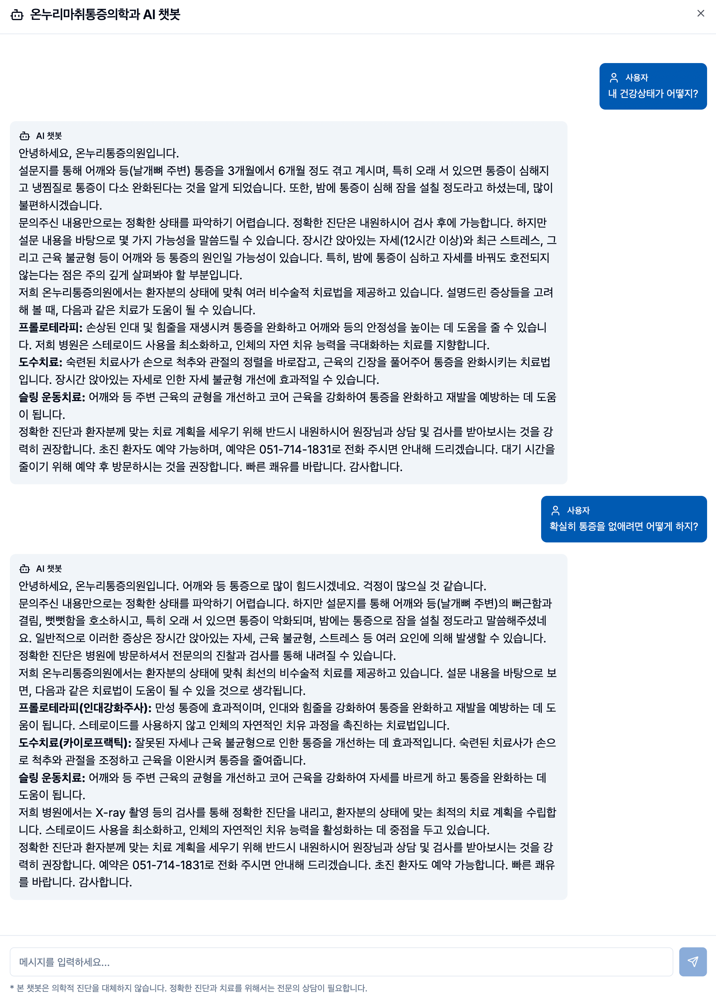

환자 지원 챗봇
목적
설문 결과 및 생성된 리포트를 바탕으로 환자의 궁금증을 해소하고, 안심시키며,
병원 방문을 자연스럽게 유도
합니다.
프롬프트 엔지니어링 전략
데이터 기반 페르소나:
원장님 답변 900여개 분석 기반
개인화된 상호작용:
환자 설문/리포트 기반 맞춤 응답
명확한 역할 정의:
의료 전문가 아님 명시, 방문 권유
공감 및 안심:
불편감 공감, 긍정적 전망 제시
주요 특징
환자 특성 맞춤 개인화된 대화
온누리통증의학과 치료법 소개
불필요한 걱정 해소 및 심리적 지원
